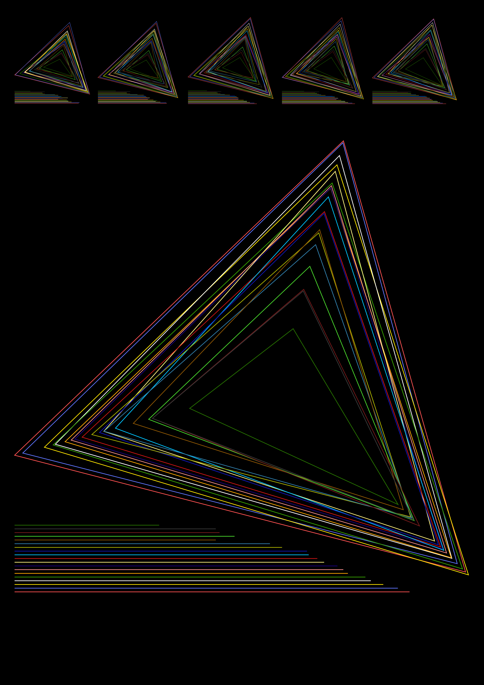
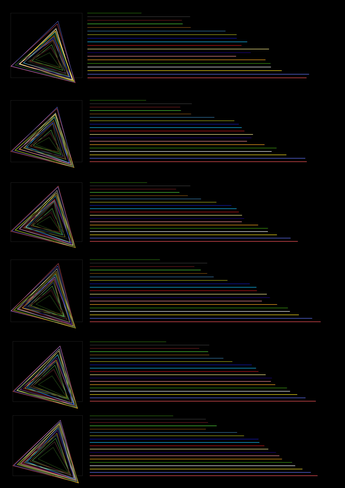
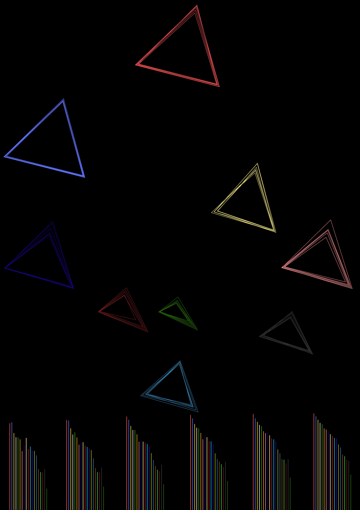
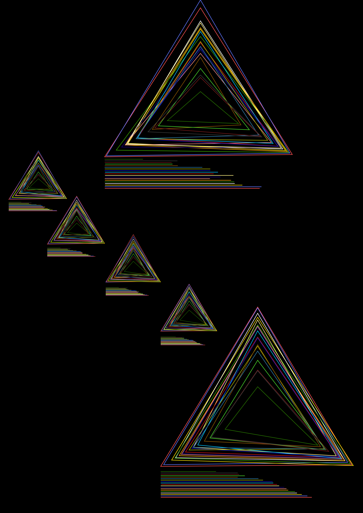
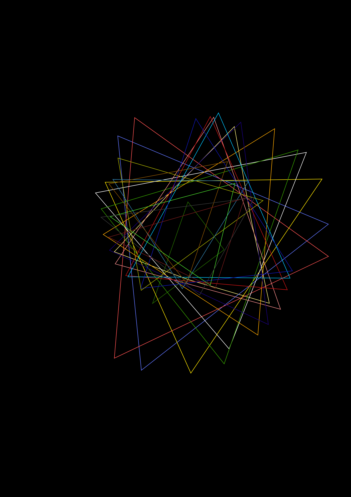

Life Quality Worldwide
Blue text: distance between centre and corner point: education index
Red text: distance between centre and corner point: life expectancy index
Green text: distance between centre and corner point: income index
This project is a visualization of the Human Development Index (HDI) over the course of 25 years. The key explains how to read the depiction. The time-period from 1990 to 2015 is visualized. The componente in the upper row represent from left to right the years 1990 to 2010. The big component represents the year 2015. I decided on this topic because I am interested in inequality and discrepancies between living standards worldwide. The biggest challenge in this project was finding a fitting layout to convey the flow of time. Until I settled on my final variant, I created more than 50 variants and different concepts. Some of these were more experimental, while others only changed the layout of the triangles. I illustrated the entire dataset by hand in Adobe Xd. The final product of this project is an A1 poster.
About the Human Development Index (HDI)
The HDI is measured annualy by the United Nations. The exact calculation is very complex. The most important indices, however, are the income index, the life expectancy index and the enducation index. These indices are results of calculations in their respective fields. The HDI isn't an ideal reflection of living conditions in a country. For example, the people in a country with a low income index aren't neccesarily less happy than those in a rich country. Another reason why the HDI isn't an ideal reflection of living standards in a country is that it is calculated with average numbers. Thus, differences in a country are not accounted for. Aside from this, the HDI is still a respectable source, which works very well for this project, because of its regaular elicitation.
Other Drafts
These are some variants with the same basic concept. I chose none of this as my final result, because either the flow of time wasn't identifiable or the components were hard to compare.
Layout in which the HDI is in the foreground.
Layout variant in which the three indices are roughly cartographically aligned.
Layout that does not show the flow of time ideally.
Variant in which the HDI determines the rotation of the triangles.
